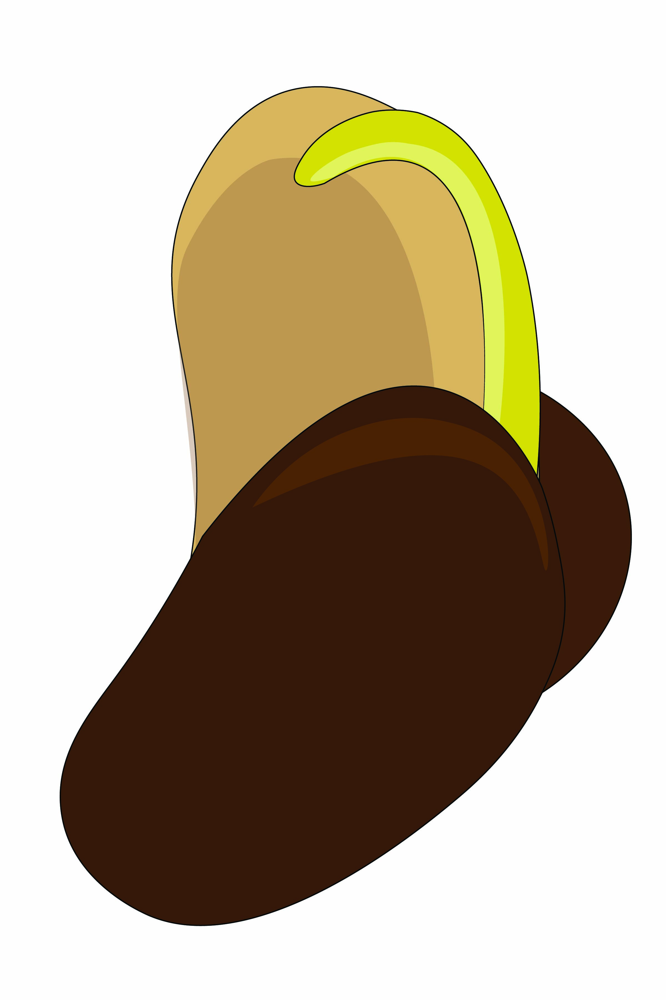
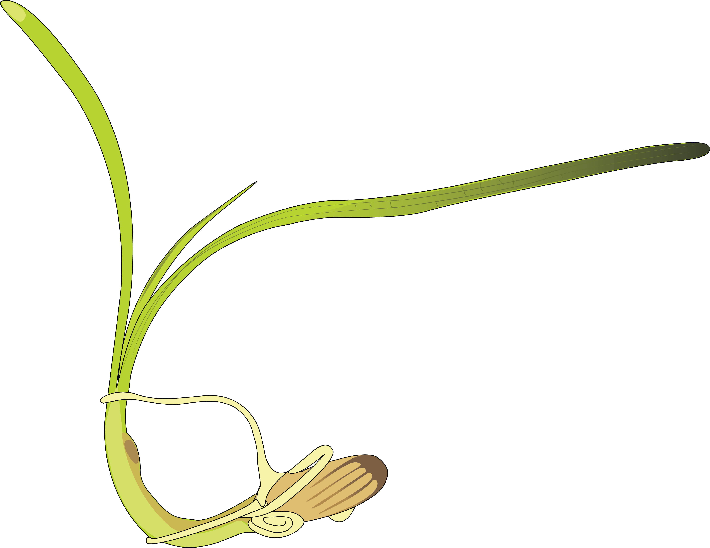

What services do bacteria provide marine plants, and how can we harness them for restoration?
Bacteria associated with seagrasses produce phytohormones that stimulate plant growth, detoxify harmful sulfides in sediments, and fix atmospheric nitrogen into forms plants can use. My research aims to understand and leverage these microbial partnerships to improve the success of seagrass restoration efforts.
In the Sogin Lab at UC Merced, I have cultivated over 450 bacterial isolates from the Zostera marina rhizosphere and employ genomic sequencing, metatranscriptomics, and metabolic modeling to characterize their functional potential.
Seagrasses are Marine Flowering Plants and Carbon Sinks


Seagrasses are marine flowering plants that evolved from land plants and returned to the ocean. They form critical coastal ecosystems that support fisheries, protect shorelines, and serve as powerful carbon sinks, capturing 35 times more CO₂ than all terrestrial plants combined, despite covering just 0.1% of Earth’s surface.
Yet seagrass meadows are declining worldwide due to coastal development, pollution, and climate change. Restoration efforts are expensive and often have low success rates, motivating the search for microbial solutions.
From Land to Sea: Plant Growth-Promoting Bacteria
On land, plant productivity is closely tied to microbial services. Plant growth-promoting rhizobacteria (PGPR) have been studied extensively in agriculture, where they boost crop yields by producing hormones, solubilizing nutrients, and suppressing pathogens.
My work asks: can we apply this same framework to the marine environment? By isolating and characterizing bacteria from the Zostera marina rhizosphere, I am identifying marine PGPB that produce indole-3-acetic acid (IAA), fix nitrogen, and exhibit other growth-promoting traits that could be used as probiotic sediment amendments for seagrass restoration.


Toward Microbial-Assisted Restoration



By understanding which bacteria are most beneficial and how they interact with seagrass roots, we can develop targeted microbial inoculants to support restoration projects. This approach has the potential to significantly improve transplant survival rates and accelerate meadow recovery, helping restore one of Earth’s most valuable blue carbon ecosystems.